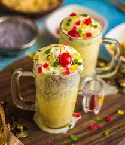

badam faluda

Process
For the Falooda Sev.
In a pan, add corn flour, sugar and water. Mix very well. There should not be any lumps at all.
Cook this mixture on a medium flame stirring continuously. Cook till it becomes thick and translucent.
Grease a sev maker with smallest hole sieveattachment( sev disc) and add the cooked mixture into it.
Take the ice cold water into a big bowl.
Close the Sev maker with its lid and start making the sev dropping them directly to the ice cold water.
After having made all the sev, keep this bowl of sev with ice cold water into the fridge for 30 minutes.
For the Kesar Badam Milk.
Soak badam flakes and kesar in 14th cup of milk for 30-40 mins.
Grind this to a coarse paste.
In a pan, add this paste, rest of the milk and sugar and mix well. Cook till the milk starts boiling.
Remove from the gas. Once it reaches room temperature, chill the milk in the fridge
Soak the basil seeds in water for half an hour. It will swell up and become soft.
Keep this also in the fridge.
Add one tbsp of sugar to the chopped mixed fruits. Mix well and refrigerate it.
To assemble the Falooda.
Take a tall glass and add some mixed fruits.
On top of the fruits, add the soaked basil seeds followed by the falooda sev.
Pour the kesar badam milk till 34 the of the glass
Just stir gently so that the milk will flow down to the bottom of the glass.
Now top it with vanilla ice cream, pour some kesar badam milk over it
Drizzle some caramel syrup or any syrup of your choice and sprinkle some roasted badam flakes and serve immediately:)